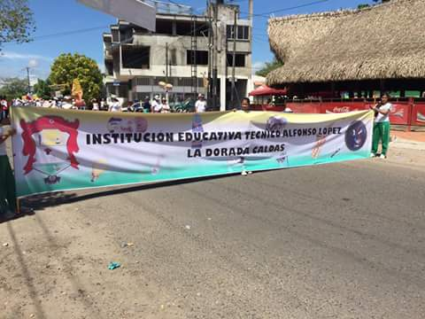

CONCURSO CALDENSE DE BANDAS ESTUDIANTILES SINFONICAS 2016

“LA INSTITUCION EDUCATIVA ALFONZO LOPEZ PRESENTE EN EL XXXV CONCURSO CALDENSE DE BANDAS ESTUDIANTILES SINFONICAS 2016” Del 23 al 25 de septiembre de 2016 en la versión XXXV del concurso caldense de bandas estudiantiles de música, el turno es para el municipio de la dorada, ubicado a 170 kilómetros de la capital de Manizales. Donde la institución educativa Alfonzo López no se hizo esperar para demostrar todo el talento que tienen sus estudiantes en el manejo de los instrumentos musicales. Con una participación de más de 5000 personas, La Dorada y sus habitantes recibieron a 13 municipios que con interpretaciones clásicas, modernas y rockeras protagonizaron un fin de semana cultural. La versión XXXV del Concurso Caldense de Bandas Estudiantiles de Música categoría A se celebró por segunda vez en nuestra Ciudad, gracias al apoyo de la Gobernación y a la gestión de la División de Cultura Vive La Dorada. Bajo la premisa Cultura en Paz las diferentes instituciones educativas del Departamento y los alcaldes asistentes recalcaron, la importancia de apoyar estos eventos que permiten alejar a niños y jóvenes de espacios que pongan en riesgo su sano esparcimiento. El Concurso se tomó por completo La Ciudad, con la presentación de las 13 bandas participantes en diferentes puntos del Municipio: en las antiguas Bodegas del Ferrocarril se llevó a cabo la primera ronda de audición en recinto cerrado, también los parques: Santander y Simón Bolívar fueron testigos de las noches de verbenas. Asimismo, en el parque Jorge Eliecer Gaitán estuvo ubicada la tarima principal donde se demostraron los actos de protocolo y debutaron las bandas en su segunda y tercera ronda.